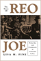
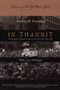
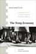
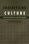
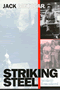
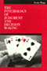
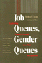
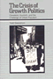
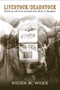
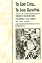

|
|
Process
of Occupational Sex-Typing
The Feminization of Clerical Labor in Great Britain, 1870-1936
Cohn,
Samuel
Jessie Bernard Book Award, American Sociological Association,
1989 |

|
The
Story of Reo Joe
Work, Kin, and Community in Autotown, U.S.A.
Fine,
Lisa M.
Cugnot Award of Distinction, 2005
Selected for inclusion on the list of Michigan Notable Books, 2005
Chosen by the Adult Non-fiction Committee of the Society of Midland
Authors as the first runner-up, 2004-5 |
|
Out in the Union
A Labor History of Queer America
Frank, Miriam
Outstanding Academic Title, Choice, 2015 |

|
In
Transit
The Transport Workers Union in New York City, 1933-1966
Freeman,
Joshua B.
Co-winner of the Taft Book Award, 1989 |

|
Seeking
Community in a Global City
Guatemalans and Salvadorans in Los Angeles
Hamilton,
Nora and Norma Stoltz Chinchilla
Best book published in the area of Race/Ethnicity and Foreign
Policy/Globalization given by the section on Race, Ethnicity,
and Politics of the American Political Science Association
(APSA), 2002 |

|
The Temp Economy
From Kelly Girls to Permatemps in Postwar America
Hatton, Erin, foreword by Nelson Lichtenstein
Honorable Mention, Labor and Labor Movements Section of the American Sociological Association, 2012 |

|
Engineering
Culture
Control and Commitment in a High-Tech Corporation
Kunda,
Gideon
Culture Section Book Award, American Sociological Association,
1994 |

|
Striking
Steel
Solidarity Remembered
Metzgar,
Jack
Winner of the Sidney Hillman Foundation Award, 2001 |
|
Deregulating Desire
Flight Attendant Activism, Family Politics, and Workplace Justice
Murphy, Ryan Patrick
The Organization of American Historians' David Montgomery Award for the best book
on a topic in American labor and working-class history, 2017
|

|
Psychology
of Judgment and Decision Making
Plous,
Scott
8th Annual William James Book Award, American Psychological
Association, 1993 |

|
Job
Queues, Gender Queues
Explaining Women's Inroads into Male Occupations
Reskin,
Barbara F. and Patricia A. Roos
Sex and Gender Section Award for Distinguished Contribution
to the Study of Sex and Gender, American Sociological Association,
1995 |
|
Between
Women
Domestics and Their Employers
Rollins,
Judith
Jessie Bernard Book Award, American Sociological Association,
1987 |
|
Technological
Change and Co-Determination in Sweden
Sandberg,
�ke with Gunnar Broms Arne Grip Lars Sundstrom Jesper Steen
and Peter Ullmark, foreword by Andrew Martin
Abel Wolman Award, Public Works Historical Society, 1989 |

|
The
Crisis of Growth Politics
Cleveland, Kucinich, and the Challenge of Urban Populism
Swanstrom,
Todd
Best Book in Urban Politics Award, American Political Science
Association, 1988 |

|
Livestock/Deadstock
Working with Farm Animals from Birth to Slaughter
Wilkie, Rhoda M.
British Sociological Association's Philip Abrams Memorial Prize for the Best First and Sole-Authored Book within the discipline of Sociology, 2011
Award for Distinguished Scholarship in the Animals and Society Section of the American Sociological Association, 2011 |

|
To
Save China, To Save Ourselves
The Chinese Hand Laundry Alliance of New York
Yu,
Renqiu
Outstanding Academic Title, Choice, 1994
Outstanding Book in History Award, Association for Asian American
Studies, 1993 |
|